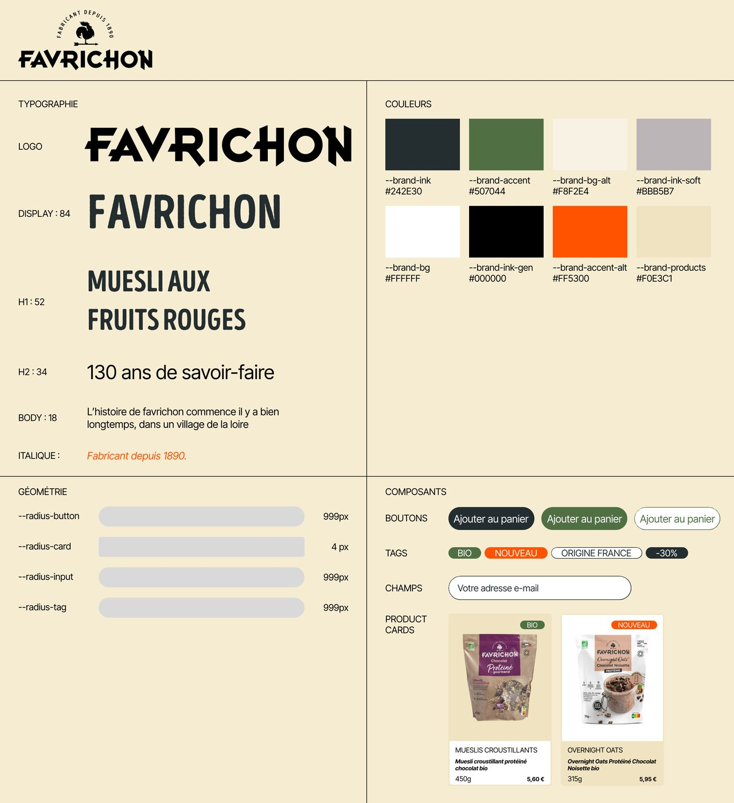
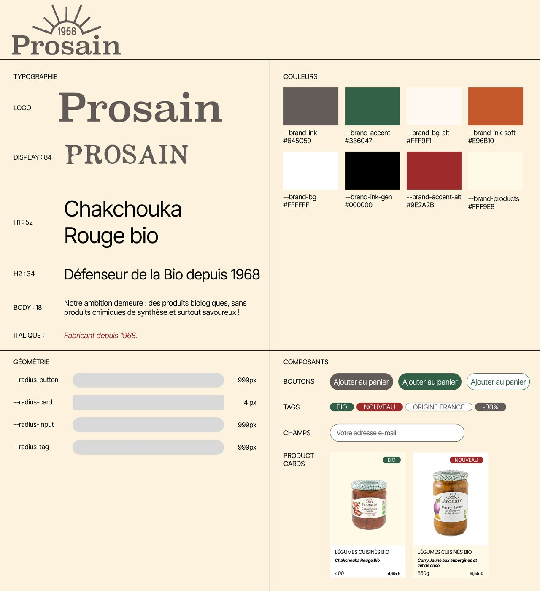
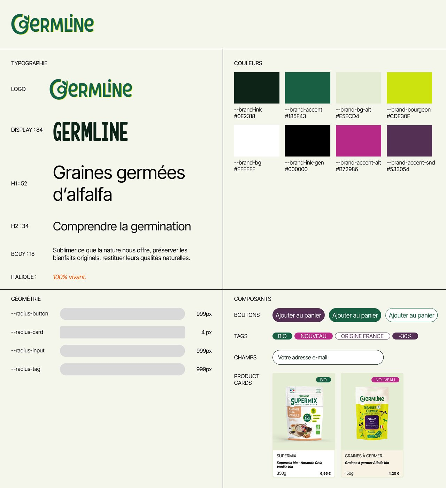
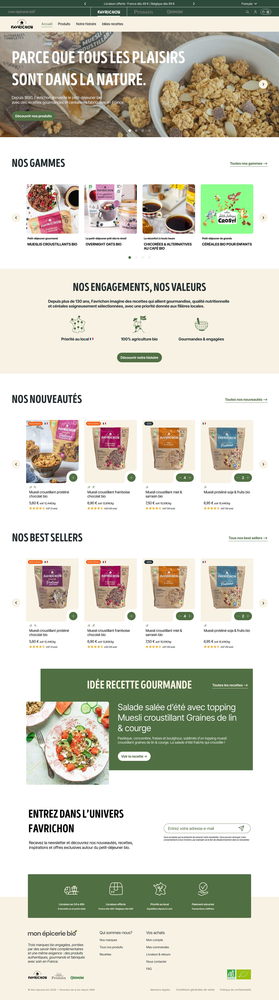
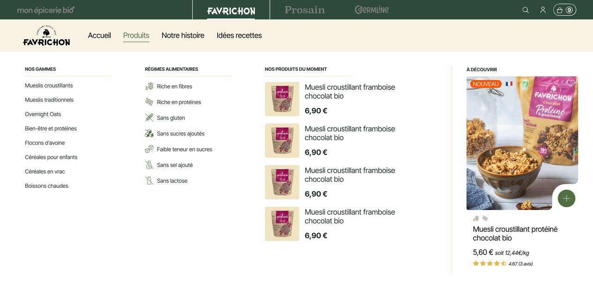
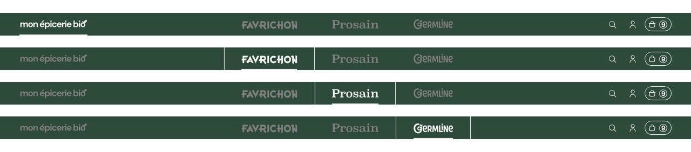
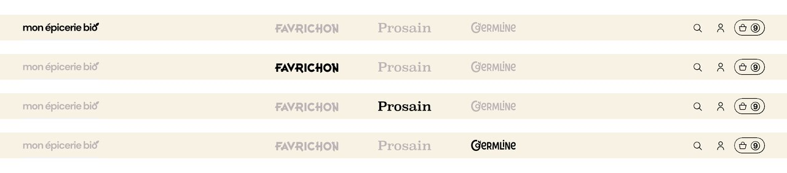
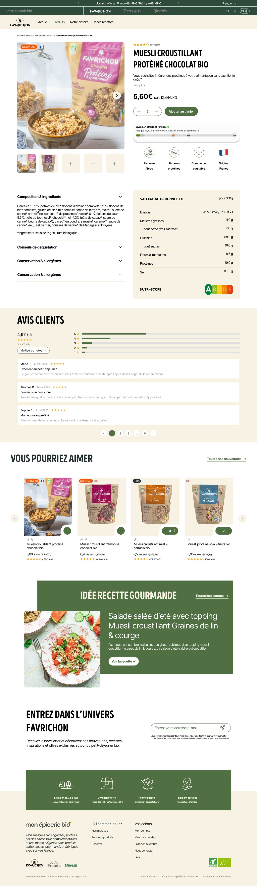
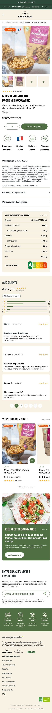
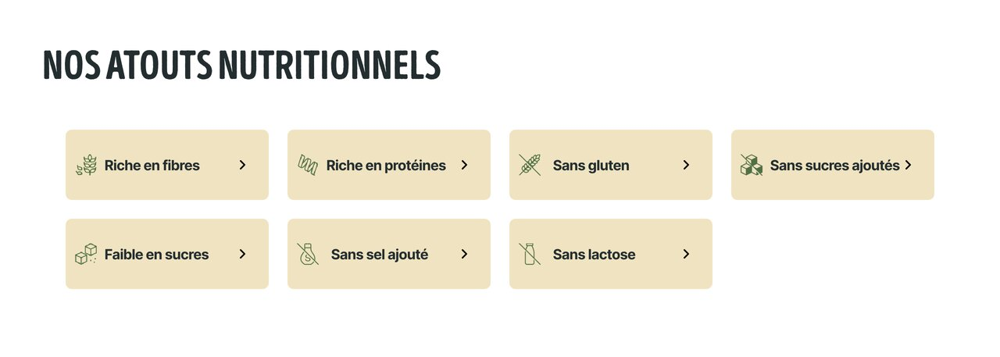

Vous trouverez ci-dessous les premières maquettes réalisées avec le développeur dans le cadre de la refonte e-commerce.
Cette proposition a pour objectif de valider les grands principes graphiques, les parcours utilisateurs et l'organisation générale du futur site. Elle est le fruit de plusieurs phases de réflexion, d'essais et d'arbitrages menées en amont afin d'aboutir à une version réaliste, tenant compte à la fois de nos ambitions et des possibilités offertes par Shopify.
Les visuels utilisés à ce stade ne sont pas définitifs et servent principalement à illustrer le positionnement des différents éléments et les grands équilibres de chaque page.
Vos retours permettront naturellement d'affiner et d'améliorer ces premières propositions.
Ces brand guidelines s'appuient à la fois sur les chartes graphiques existantes et sur les sites de marques déjà en ligne. L'objectif est d'assurer une continuité entre les univers de marque actuels et le futur site e-commerce.
Elles constituent un cadre de travail commun qui sera naturellement amené à évoluer au fur et à mesure du projet, des contraintes techniques rencontrées et des adaptations propres à chaque marque.



Cette maquette constitue la pièce maîtresse du projet. Elle permet de valider à la fois les grands principes graphiques et l'organisation générale de la page.
Nous nous sommes appuyés sur les codes éprouvés du e-commerce tout en cherchant à conserver les marqueurs identitaires déjà présents sur le site de marque Favrichon.
Les visuels utilisés à ce stade sont provisoires et servent principalement à illustrer le positionnement des différents éléments.
Une section dédiée aux bénéfices nutritionnels viendra compléter cette homepage dans une prochaine version. Elle s'inspirera probablement du composant présenté dans la rubrique « Atouts nutritionnels ».
Chaque marque disposera de son propre méga menu. Les trois méga menus suivront toutefois une structure commune afin d'assurer une continuité dans l'expérience utilisateur lorsqu'un consommateur passe d'un univers de marque à un autre. Le contenu et l'identité visuelle resteront naturellement adaptés à chaque marque.
Les cross navbars correspondent à la barre située tout en haut du site et permettent de naviguer d'un univers de marque à un autre.
Nous avions initialement travaillé sur une version à fond sombre, visible notamment sur la maquette de la homepage Favrichon. Cette approche limitait toutefois la lisibilité de certains éléments.
Sur les conseils de Stéphane, nous avons donc développé une version à fond clair, qui nous paraît aujourd'hui plus lisible et plus équilibrée.
Nous avions également envisagé d'intégrer un accès « Tous nos produits » à gauche de cette barre supérieure. Cette approche créait toutefois un conflit avec les méga menus de chaque marque, qui comportent déjà un accès à l'ensemble des produits de leur univers.
Nous nous orientons donc vers un accès « Mon Épicerie Bio », cohérent avec l'URL du futur site. Celui-ci renverra vers une page portail permettant d'accéder soit aux différentes marques via leurs univers respectifs, soit à l'ensemble des produits toutes marques confondues.




Les pages produits ont été pensées selon une logique mobile-first. Les premières réflexions ont donc porté sur l'expérience mobile avant d'être déclinées sur desktop.
L'objectif est de proposer un parcours simple, lisible et orienté conversion, tout en conservant suffisamment d'informations pour accompagner le consommateur dans sa décision d'achat.


Les filtres nutritionnels constituent une porte d'entrée importante dans l'expérience utilisateur du futur site.
Ils seront utilisés sur la homepage Favrichon mais également à d'autres emplacements lorsque cela apportera une réelle valeur à la navigation.
